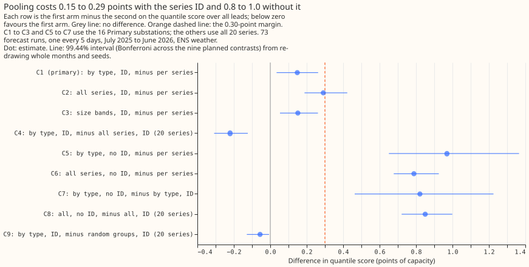
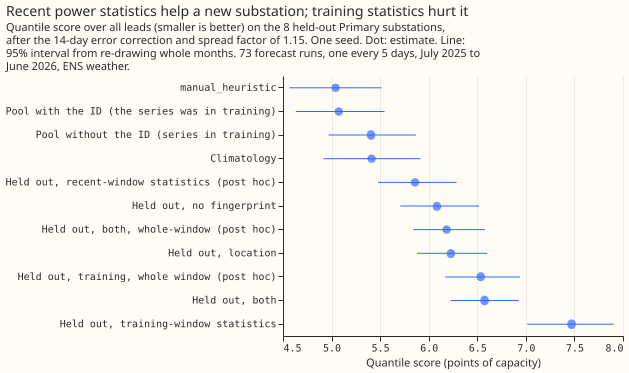

Hierarchy and pooling
One XGBoost model shared by a group of Primary substations forecasts almost as well as one model per substation (0.15 points of capacity worse, 99.44% interval +0.03 to +0.26), but the one test of a substation outside the pool (8 Primaries, one seed) found fingerprints made it worse, and forecasts of the series beneath 2 bulk supply points added nothing.
Pooling means training one XGBoost model on the rows of several series, with the series identifier as a column, so that 20 models become 3 or 4. The pooling results are from one validation year (July 2025 to June 2026) on 16 Primary substations and 4 supply points, with ENS weather. The hierarchy results cover 2 bulk supply points and 2 grid supply points, and 4 series cannot separate the designs.

Every pooled arm scores worse than one model per series (positive is worse), by 0.15 to 0.29 points with the series identifier and 0.8 to 1.0 without it. Source: experiment 24; C1 to C3 and C5 to C7 use 16 Primary series, and C4, C8, and C9 use all 20 series.
Does it work?
Three or four pooled models score 0.15 points of capacity worse than 20 per-series models on the
16 Primaries, inside the pre-registered margin of 0.30. The scores are the
quantile score over all leads after the
14-day correction and a spread factor of 1.15 (the
stack of experiment 19, with a half-life of 0.5 years). Per-series models
score 5.32, one model per substation type 5.47 (C1, +0.15, 99.44% interval +0.03 to +0.26), and one
model per capacity band 5.47 (C3, +0.15, +0.05 to +0.26). The type pools
beat manual_heuristic (5.89) by 0.42 (exploratory, -0.68 to
-0.19). The verdict is supported (experiment
24).
One model for all 20 series falls outside the margin. It scores 5.61 on the 16 Primaries (C2, +0.29, +0.19 to +0.42). On the 2 bulk supply points alone it loses 0.80 (0.64 to 1.00, exploratory, 95%), and the 4 supply points are too few to separate the type pools from per-series models (+0.03, -0.15 to +0.15, exploratory, 95%; experiment 24).
For Primaries, the number of models matters more than which series share one. Random groups of 5 score 5.47 on the 16 Primaries, the same as the type pools. On all 20 series the type pools beat random groups by 0.06 (C9, -0.13 to -0.01), and on the 4 supply points by 0.29 (exploratory, interval not given; experiment 24).
The series identifier is essential. Dropping it raises the score of the type pools by 0.82 (C7, +0.46 to +1.23) and of the all-series pool by 0.85 (C8, +0.72 to +1.00) (experiment 24).
Describing each substation with numbers added nothing to the identifier for series seen in training. Adding a substation's location, its mean level and shape over the training window, or its level over the previous 14 days to the identifier moved the score by at most 0.02 points (C1 to C4; C4, +0.02, 99.375% interval -0.05 to +0.10). The verdict is inconclusive by the pre-registered rule, though the data exclude a gain above 0.05. Training-window statistics alone, without the identifier, scored 0.01 points worse than the identifier (C5, 99.375% interval +0.00 to +0.02, inside the 0.15 margin; experiment 32).

A substation held out of the pool was forecast worse with training-window statistics than with no fingerprint (C7, +1.39, +0.99 to +1.91), and better with recent power statistics alone (post hoc, -0.23, -0.29 to -0.16, 95%). The test used 8 held-out Primaries, one seed, and a pool of 7 other series. The write-up suggests, without testing it, that 7 distinct fingerprints act as 7 identifiers (experiment 32).
Forecasts of the series beneath a bulk supply point did not lower its score. Adding the summed median forecasts of the Primaries and generators beneath a bulk supply point changed its score by +0.04 (99.17% interval -0.18 to +0.25) at Boston and +0.19 (-0.10 to +0.73) at Skegness. At the 2 grid supply points, generic wind and solar columns changed it by -0.02 (-0.06 to +0.03) and -0.04 (-0.13 to +0.07). The pre-registered rule marks the bulk-supply-point family and the wind-and-solar family refuted and the ERA5-trained family inconclusive, so the experiment is inconclusive (experiment 36).

The six planned contrasts all include zero; the two exploratory rows are the ERA5-trained N1 at the bulk supply points, and Boston's excludes it.
An N1 trained on ERA5 and applied to ENS members lowered the grid supply point scores by 0.36 and 0.40, but its intervals span -1.8 to +1.0. N1 is the single-stage XGBoost quantile model. Only Boston, a bulk supply point, resolved a gain, of 0.41 (0.15 to 0.66, exploratory, 95%) (experiment 36).
Best design so far
Of the pooled designs tested, one model per capacity band or per substation type scored best, and with the 14-day correction none beat one model per series on the 16 Primaries.
- Train an XGBoost quantile model (experiment 24's recipe, N1 fitted per group instead of per series: 9 quantile levels, ENS control member, lead hour, calendar columns, three power lags, power scaled by each series' effective capacity) on 3 capacity bands (the series split into thirds by effective capacity) or 4 substation types. Each pool holds all 20 series, including the 4 supply points.
- Give every XGBoost model the series identifier as a categorical column.
- Apply the 14-day correction and a spread factor of 1.15 to each series' quantiles.
The capacity-band and type pools score the same to two decimals (experiment 24). The pre-registered rule chose capacity bands because they have fewer models.
Candidates for production
Experiment 24 is candidate; experiments 32 and 36 are not-for-production.
- Pooled XGBoost models for Primary demand (experiment 24). The XGBoost forecaster would train 3 or 4 models instead of 20 and store them at 73 to 94 MB instead of 435 MB, for a loss of 0.15 points of quantile score on the 16 Primaries, with the 14-day correction. Each model would need the series identifier, and a new series would need a retrain. The test covered 20 series, so it says nothing about 2,500 substations.
- Nothing from experiments 32 or 36 is ready. No fingerprint helped a series seen in training, and no forecast column lowered a bulk or grid supply point's score.
Gotchas and implementation details
- Keep the series identifier in every pooled model. Without it, the type pools lost 0.82 and the all-series pool 0.85 (experiment 24). Re-check with a different model type or a different pool of substations.
- Score pooled arms with and without the 14-day correction. The correction lowers per-series models by 1.0 and type pools by 0.6, so type pools beat per-series models by 0.30 uncorrected (exploratory, 95%, -0.56 to -0.03) and lose 0.15 corrected (experiment 24). A ranking measured on one stack may not carry to another. Re-check if the correction changes.
- Scale boosting rounds (the number of trees) with the pool size, or say they were not scaled. Experiment 24 fixed 500 rounds and depth 6, so the all-series loss may be partly lower capacity per series. Re-check with rounds scaled to rows.
- Do not compare fit seconds across arms. Other sessions loaded the machine during the capacity-band and random-group fits of experiment 24, so only model counts and saved sizes are reliable. Re-check with timings on an idle machine.
- Match a held-out substation's fingerprint window to the pool's. The held-out substation's 28-day statistics differed from the pool's 15-month ones, and using the whole window removed about two thirds of the C7 damage (post hoc; experiment 32). Re-check with a pool of hundreds of series.
- Do not read the oracle's gain as headroom for forecasts. The oracle is the same XGBoost model given the observed values of the series beneath a bulk supply point. It lowered the score by 5.6 and 3.4, while forecasts of those series lowered it by none (experiment 36). Re-check if the child forecasts come from a different weather source.
- Note how the columns of forecasts of the series beneath a supply point were built. Experiment 36 fitted them by time block, so a block's forecasting model saw months on both sides, and training used the ENS control member while validation used each member. Look for a gain that changes when the columns are fitted strictly out of time, or when training uses every member.
- Do not compare supply-point scores across experiments 24 and 36. Experiment 24 applies the 14-day correction to all 20 series, including the 4 supply points. Experiment 36 left it off at supply points because experiment 21 found it unproven there, so its scores are uncorrected. Re-check when a supply-point experiment states which stack it used.
What we have not settled
- Whether pooling holds at hundreds of series, and for substations the pool never saw.
- Whether supply points pool at all; 4 series cannot say.
- Whether an N1 trained on ERA5 helps at supply points beyond Boston.
- Whether one model shared across substations, with drift and long history, beats separate models. That is the subject of the differentiable-physics background and the sub-themes long history and drift and demand calendar and weather.
The Research plan lists what is planned next, and Experiments lists every experiment. Experiment 103 appears there as also relevant: its data look fixes the rows and dates the pooled differentiable-physics model uses, and it has no pooling result.